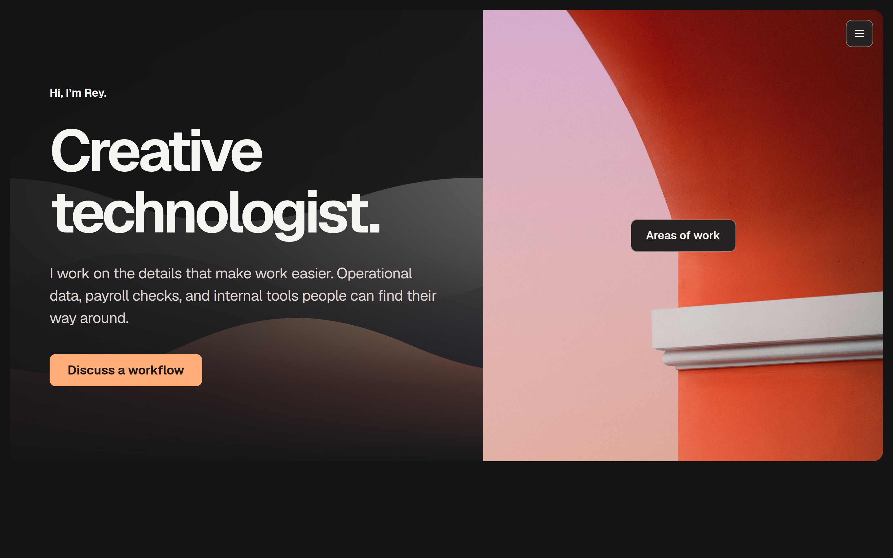
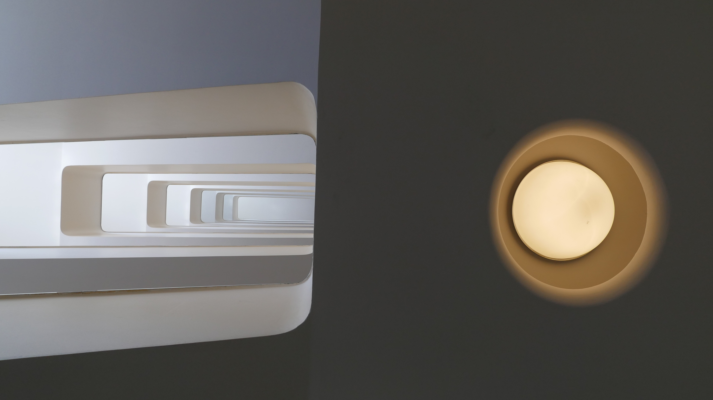

Hi, I’m Rey.Creative
technologist.
I work on the details that make work easier. Operational data, payroll checks, and internal tools people can find their way around.
I work on the details that make work easier. Operational data, payroll checks, and internal tools people can find their way around.
Checking, reconciliation & repair
Clearer checks and everyday workflows
Simpler screens and shortcuts
The previous portfolio, alongside an architectural reference.

